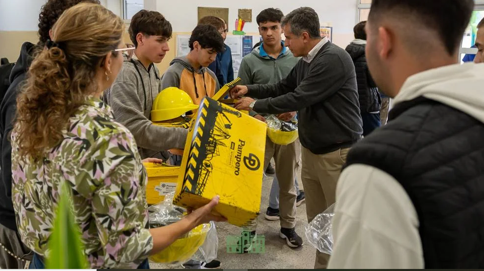
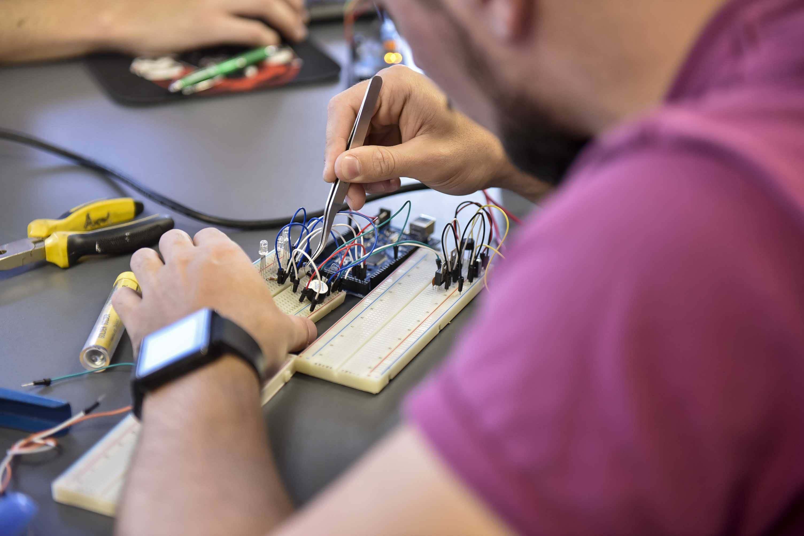

Recibimos donaciones
Herramientas, insumos, materiales de dibujo y recursos de taller.

El programa Herramientas para Crear está orientado a estudiantes de escuelas técnicas que necesitan materiales, herramientas y acompañamiento para realizar prácticas, trabajos y proyectos escolares.
En muchas trayectorias técnicas, aprender no depende únicamente de leer o estudiar, sino también de poder construir, probar, medir, dibujar, reparar, soldar o experimentar. Sin embargo, muchos estudiantes no cuentan con los materiales necesarios para participar plenamente en sus materias prácticas.
Desde Cuadernos Llenos buscamos acompañar a estos jóvenes reuniendo herramientas, insumos, elementos de dibujo técnico, componentes, materiales de taller y recursos que les permitan sostener su formación. La comunidad puede colaborar no solo con útiles escolares, sino también con herramientas como soldadores, pinzas, multímetros, kits de dibujo, materiales eléctricos, electrónicos, mecánicos o de taller.
Además, en articulación con el programa Aprendemos Juntos, conectamos a estudiantes y exestudiantes de escuelas técnicas, terciarios y universidades para que puedan brindar asesoramiento y apoyo a quienes están desarrollando proyectos escolares. De esta manera, el acompañamiento no se limita a entregar materiales: también busca compartir experiencia, conocimiento y motivación.
El objetivo es que ningún estudiante técnico quede limitado por no poder costear las herramientas o insumos que su formación requiere.
Herramientas, insumos, materiales de dibujo y recursos de taller.

Clasificamos los materiales y los vinculamos con estudiantes, escuelas o espacios de apoyo.

Con ayuda de voluntarios y tutores técnicos, los jóvenes pueden usar esos recursos para avanzar en sus prácticas y trabajos.

Impulsar una vocación también es acercar las herramientas para desarrollarla.